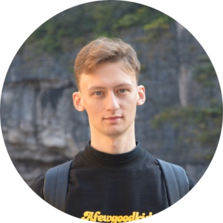

rod_iv@outlook.com
WeChat: rod_iv
Phone number: +8618800131778
# Ivachev Fedor 費杰 ([printed version](https://github.com/FedorIvachev/fedorivachev.github.io/blob/master/Resume.pdf?raw=true))
## Executive Summary
* Currently located in Beijing and open to relocation
* Experienced in **Computer Vision** and **Computer Graphics** with a focus on **Big Data Intelligence**
* Proficient in Python and C++, with experience in Java, C#, JavaScript and SQL
* Tools, Libraries: Git, OpenCV, NumPy, TensorFlow, pandas, Graphics Profilers, Unity, IoT automation platforms
## Work Experience
#### Tsinghua University, Beijing (Teaching Assistant, 2021/01 - 2022/01; PhD Research Assistant 2021/09 - Present)
* Assisted lead instructor in facilitating Human-Computer Interaction course
* Helped and taught both international and local students
* Developed educational tutorials and provided assistance to students for group projects
* Contributed to the development of lab projects and the publication of research papers
#### Huawei Technologies Co., Ltd, Moscow (Software Engineer, 2019/02 - 2019/08)
* Worked on low-level Graphic Profiling Tools using **C++**
* Retrieved information from integrated GPU counters, which helped to gain more precise timings for draw calls
* These tools were used by Graphic optimization and QA teams
* Coordinated with developers across Russia and China
#### Samsung RC, Ltd, Moscow (Intern, Programmer, 2018/06 - 2018/09)
* Developed Computer vision algorithms in 3D Avatar team using **C++** and **Python**
* Worked on OpenCV source code for removing camera distortion and implemented face physical landmark detection algorithm
* Our solution was later included into the OS
## Education
* Master's in Computer Science (2019/09-2021/06), GPA 3.9, Tsinghua University, China
* Bachelor's in Computer Science (2015/09-2019/06), Lomonosov Moscow State University, Russia
## Projects + Technology stack
* **Unity C# + IoT platforms -** [NUIX-Studio APP](https://github.com/FedorIvachev/NUIX-Studio-APP) - A platform to test AIoT environments in Virtual Reality. Based on Microsoft MRTK, OpenHAB and HomeAssistant (version 1), it lets users to extend real-world IoT devices with additional functionality in the Virtual Reality. Vesrion 2 is based on Oculus SDK and includes a user interface, which allows prototyping IoT interactions in Virtual Reality without any programming knowledge.
* **OpenAI API + Android Studio + Java + Azure + Huawei Mobile Services -** [AI real-world agent](https://github.com/FedorIvachev/AI-real-world-agent) - GPT-4-based agent analyzes multimodal information from AR glasses sensors to build a human portrait and handle everyday conversations, while automatically captioning unseen data.
* **Blender** - Special effects for TikTok - I created 10 advanced AR effects for TikTok (Douyin), which have been used for more than 3 million times.
## Qualifications
* Huawei Certification: HCIA-**AI** (2020)
* Certificate of 2-week Practice in **Web Apps** Development, Samsung RC, Ltd, Moscow (2017)
* National and First-level Olympiads of Mathematics (2015, 2012), National Olympiad of Competitive Programming (2014)
## Publications
* Modification of Algorithm for inverting matrices with elements from ring of scalar differential operators. CMC MSU MAKS PRESS 2019: 88 (in Russian)
* ClarifAI: Context-Aware Multimodal Ontological Annotation and Abnormality Detection Through Human-AI Collaboration. UIST 2024 (CCF A top-level conference; under submission)
* SightTalk: Real-time Unseen Visual Data Captioning Through Human-AI Conversation. UIST 2024 (CCF A top-level conference; under submission)
## Misc. Information
* Languages: English (C1, IELTS 7.5 in 2018), Chinese (B1), Russian (native)
* Holder of a Hong Kong ID card, allowing right to abode without any visa restrictions
* Availability: immediately